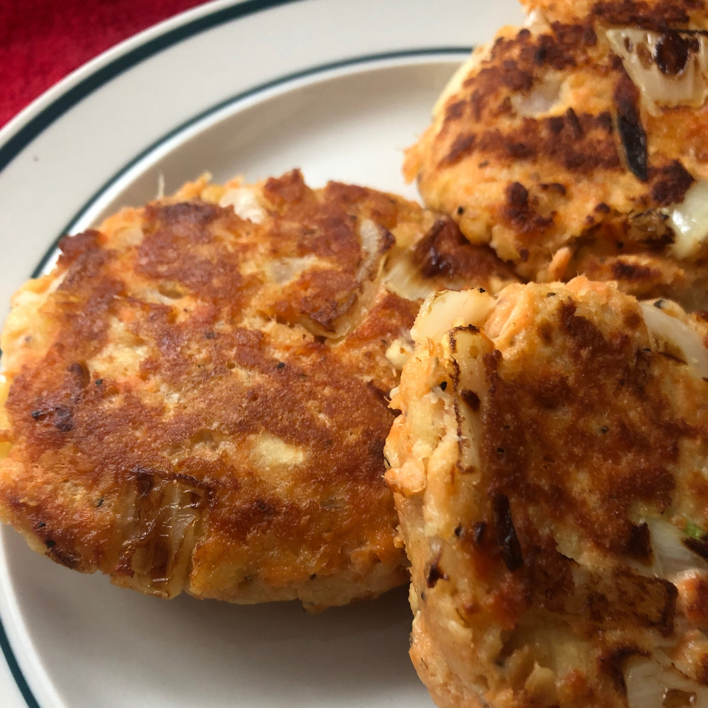

Salmon Patties recipe

These salmon patties are delicious for lunch or dinner.
his recipe is so easy and quick to make. My nine year old daughter even likes this. She did like it better when I made it with cracker crumbs rather than bread crumbs. If you're not a fish person, I'd suggest you buy the salmon that comes in tuna-sized 3 oz can.
Ingredients
- 1 (14.75 ounce) can canned salmon
- 1 egg
- ¼ cup chopped onion
- ½ cup seasoned dry bread crumbs
- 1 tablespoon olive oil
Steps
- Drain and reserve liquid from salmon. Mix egg, onion, bread crumbs and salmon together.
- Make into patties. If mixture is too dry to form into patties, add reserved liquid from salmon.
- In a frying pan, heat olive oil. Place patties in pan. Brown on each side, turning gently. Drain on paper towels and serve.